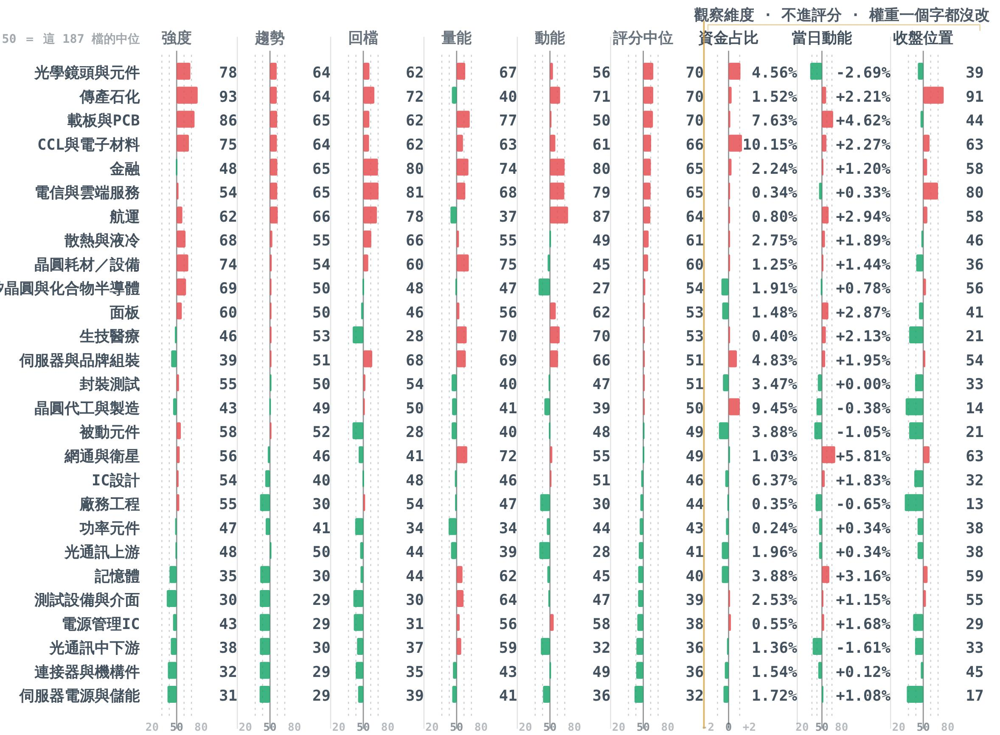
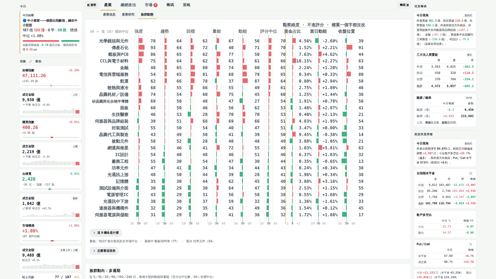
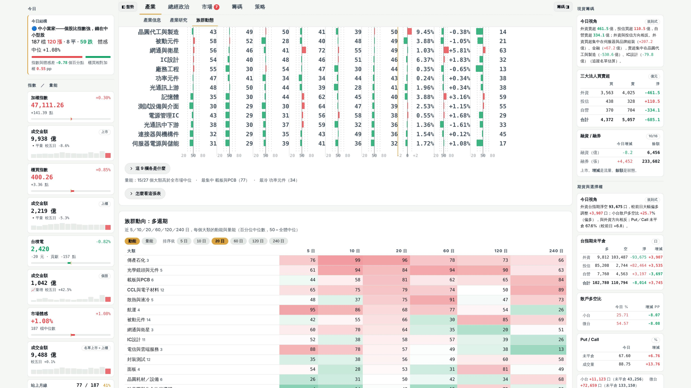
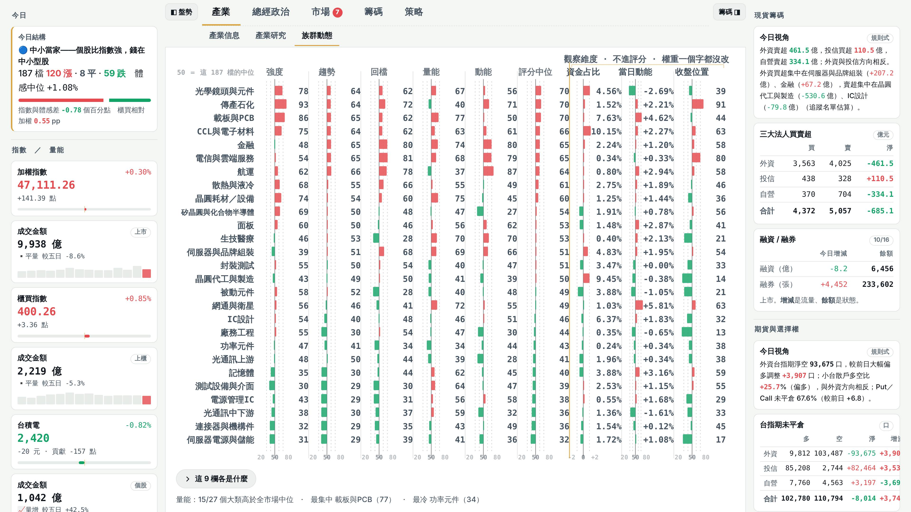
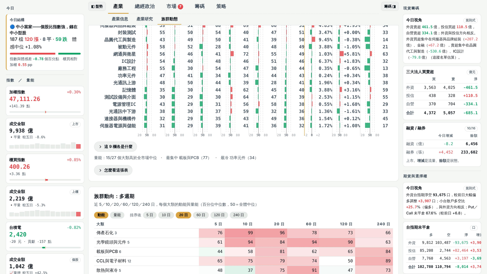

族群動態：28 吋 4K（3840×2160）驗收
2026-10-19 凌晨（台北）。23:55 總指揮裁示雲端 1～3：第 12 項已合進 main（067227d）、族群動向圖兩個小修（818a947）。截圖用 main 的 template 烤成預覽頁拍的，與正式站下一班每日更新相同；主圖捲到頁籤列下方拍第一張、再往下捲 0.4 屏拍第二張。字級為大螢幕預設 115％。
| 系統縮放 | 瀏覽器實際大小 | 主圖高度 | 主圖底部 | 多週期表標題 | 結論 |
|---|---|---|---|---|---|
| 150％ | 2560×1440 | 1057px | 1165px | 1381px | 主圖整張＋多週期標題都在第一屏 |
| 200％ | 1920×1080 | 866px | 974px | 1190px | 主圖底部在第一屏；往下約 110px 就是多週期表 |
兩個小修（同一個原因）
全站 CSS .chart text{font-size:15px} 會蓋掉圖上寫的字級（11、9.5），所以：左上「50 ＝ 這 187 檔的中位」實際寬 172、左邊超出圖框 → 只剩「0 ＝」；欄底刻度實際 15px、間距只有 14.8 → 「20 50 80」疊成「2050 80」。改成行內字級（中位說明 12px、刻度 11px，20／80 往外靠 3），資金占比欄的「-2 0 +2」一起修；同一原因左邊被切的「矽晶圓與化合物半導體」列名（10 字）改 13px。實測：整張圖所有文字左緣 ≥ 1.9（不出框），底部 27 個刻度數字兩兩不重疊、最小間距 6.2。

150％ 第一屏

150％ 往下捲

200％ 第一屏

200％ 往下捲
